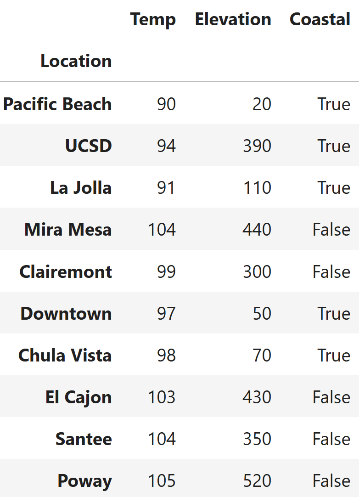

This quiz was administered in-person. Students were
allowed one page of double-sided handwritten notes; students
were not allowed to use the DSC 10 Reference Sheet.
Students had 20 minutes to work on the
quiz.
Sujal, Austin, and Rishika cleared their schedules on October 3rd,
only to realize that San Diego had become an oven that day, with
temperatures crossing 100°F.
The DataFrame oct3 contains information on 10 various
San Diego locations on that date. It is indexed by
"Location". Its columns are "Temp" (int), the
high temperature for the day; "Elevation" (int), the
elevation in feet; and "Coastal" (bool), whether the
location is coastal.

Assume we have already run import babypandas as bpd and
import numpy as np.
If your answer is a string, put it in quotes. If your answer is a
float, include a decimal point. No calculators and no computers were
allowed.
Problem 1
Lecture
8
Sujal wants to see whether locations at higher elevations are cooler.
Assume that he has already defined a function called
elevation_category, which takes in an integer elevation in
feet and returns "low" when the elevation is at most 100,
"medium" when it is greater than 100 and at most 400, and
"high" otherwise.
Problem 1.1
Write one line of code to create a DataFrame oct3_cat,
which contains every column in oct3, plus a new column
named "Elevation_Category" with the appropriate categorical
label, "low", "medium", or
"high".
Therefore, .take([1, 3, 5]) selects the rows at
positions 1, 3, and 5 (using zero-based indexing).
These correspond to:
Location
Temp
Elevation
Elevation_Category
UCSD
94
390
medium
Mira Mesa
104
440
high
Downtown
97
50
low
Step 3: .take(np.arange(2))
np.arange(2) produces:
np.array([0, 1])
This selects the first two rows of the current
DataFrame, not the original DataFrame.
We are left with:
Location
Temp
Elevation
Elevation_Category
UCSD
94
390
medium
Mira Mesa
104
440
high
Step 4:
.groupby("Elevation_Category")
Groups the remaining rows according to their elevation category.
UCSD belongs to the "medium" category.
Mira Mesa belongs to the "high" category.
Step 5: .mean()
Calculates the average of the numerical columns for each group.
Since each category contains only one location, the average
temperature is simply that location’s temperature.
high: 104
medium: 94
Step 6: .plot(kind="bar", y="Temp")
Creates a bar chart displaying the average temperature for each
elevation category.
The bars are labeled "high" and "medium",
with heights 104 and 94, respectively.
Therefore, Option D is correct.
Difficulty: ⭐️⭐️⭐️
The average score on this problem was 64%.
Problem 2
Lecture
9
For this question, assume oct3_cat was correctly created
in Question 1.
Problem 2.1
Write one line of code that evaluates to a DataFrame containing the
average temperature associated with each combination of values in the
"Elevation_Category" and "Coastal"
columns.
Rishika makes a density histogram of the 10 values in the
"Temp" column of oct3, shown above. She uses
the argument bins = np.arange(90, 110, 5). What is the
height of the tallest bar?
Answer:0.08
Explanation Video For a
density histogram, the height of each bar is calculated using:
\text{Height} = \frac{\text{Number of values in bin}}{\text{Total
values} \times \text{Bin width}}
The bins are defined by np.arange(90, 110, 5), so each
bin has a width of 5.
Bin
Temperatures
Count
[90, 95)
90, 91, 94
3
[95, 100)
97, 98, 99
3
[100, 105]
103, 104, 104, 105
4
The last bin includes 105 because the rightmost edge of the histogram
is inclusive.
Rishika then obtains a larger DataFrame of 200 locations. A density
histogram of temperatures from this larger DataFrame of 200 locations
has bins and heights given below. Assume all locations’ temperatures
fall between 80°F and 110°F, inclusive.
Bin
Height of Bar
[80,90)
0.02
[90,95)
0.04
[95,100)
0.06
[100,110]
X
What is the value of X?
Answer:0.03 In a density histogram,
the total area of all bars must equal 1.
We calculate each bar’s area using:
\text{Area} = \text{Height} \times \text{Width}
For the first three bins:
[80, 90): 0.02 \times 10 = 0.2
[90, 95): 0.04 \times 5 = 0.2
[95, 100): 0.06 \times 5 = 0.3
The total area of these three bars is:
0.2 + 0.2 + 0.3 = 0.7
Therefore, the remaining bar must have an area of:
1 - 0.7 = 0.3
Since the final bin has a width of 10:
X \times 10 = 0.3
\boxed{X = 0.03}
Difficulty: ⭐️⭐️⭐️
The average score on this problem was 66%.
Problem 3.3
How many of the 200 locations have a
"Temp" in [90,100)?
Answer:100
We want to determine how many of the 200 locations have temperatures
in the interval [90, 100).
This interval includes two histogram bins:
[90, 95): 0.04 \times 5 = 0.2
[95, 100): 0.06 \times 5 = 0.3
In a density histogram, the area of a bar represents the
proportion of observations in that interval.
Therefore, the proportion of locations with temperatures in [90, 100)
is:
0.2 + 0.3 = 0.5
Multiplying by the total number of locations:
0.5 \times 200 = \boxed{100 \text{ locations}}
Difficulty: ⭐️⭐️⭐️
The average score on this problem was 61%.
👋
Feedback: Find an error? Still confused? Have a suggestion?
Let us know
here.